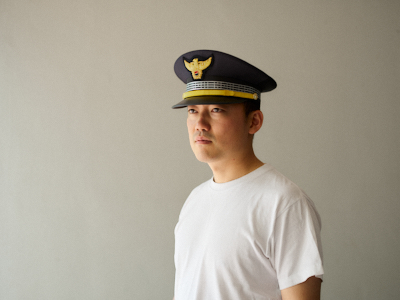

Young Lee

Words on the Surface:
A continuing and expanding record of signs begun at Hwanghak-dong Everything Market
It began with the locality of a secondhand market. Signs reveal distinctive character through type-based form and clusters of words that can be grouped by category. This led to Peace and Unification, which explores the reality of division, while I also kept collecting hand-written signs. The accumulated work was organized as a solo show at Label Gallery, followed by several collaborations. Through them I could expand the boundaries of the practice—moving beyond mechanical repetition and employing image transfer techniques and overlooked materials. Works such as Scales (using transfer) and Loose Jumper (using plastic bags) proceed toward more active, letter-based formal pieces.

Irreducible Things:
From Non-linear Time to an Eco-ethical Sensibility
Inspired by Park Kyung-ri’s poem “Jujubes and Bees,” I recorded urban scenes where plants and artificial objects mingle. Abstract ideas and sentiments have been explored through concrete subjects and situations. A sensuous acceptance of life and death, the formation and dissolution of the subject, became a core axis of the work; with ongoing questions on photography’s ontological stance, the practice expanded by discovering organic structures and responding to them. The direction has gradually converged from large concepts to everyday sensibilities.

Structures in Progress:
Records of Events and the Discovery of Types
This series records colonial-era houses in the city center. Contrary to the name, “Chungmuro” is often perceived as a place imbued with historical atmosphere. As the external environment changes, so do perceptions of locality; ever-denser networks cross borders and expand flexibly. As locality fades, the universal characteristics of structure begin to appear. The work follows the flow of typologies—recording and discovering them.
Entangled Thread, Moon Jar
The time machine will never arrive. The world is re-composed each time around pivotal memories. With no such thing as purely objective fact, that machine has no use. There is no beginning and no completion.
If I say I photograph signs, the portfolio points to 2007’s Everything Market as the starting point—but that was the result. Perhaps also a cause. Ten years earlier, after a school trip in 1997–98, my mother scolded me for bringing back photos of explanations and guideposts. Even then I seldom photographed people. Ten years before that, in 1986–87, I walked with my mother along the boulevard by the market, reading every sign out loud. She praised me, then, tired, told me to stop. I can’t find the photos from those days. My mother had no attachment to photos. When we moved to Wonju, we lost everything. She once said she had even taken my lone baby photo to a shaman who warned I might die young. I’ve outlived my father, so perhaps it worked.
I’m similar. Even when I lost entire rolls of film or deleted original digital files—well, I can shoot again. It’s because I don’t see the world as a sequence of specific events, but as a succession of recurrent re-structurings. I dislike being vague while speaking abstractly; hints of it keep appearing. In any case, time unspooling like a skein means little. Like a moon jar, the form is the same; only the view shifts. We are built to perceive a geometric “circle” that does not exist in the world. A Gestalt world—perhaps the biggest shackle. There is a powerlessness between ideal and real.
Losing all photographs would be hard, but not impossible to recover from. In Prof. Lee Joo-hyung’s mixed-media class at Keimyung University, the assignment was to expand expression by scratching the film itself. Passing a storage for mannequins in the fashion school, I photographed through a small window; the door was locked and access was rare. There was no other vantage: only that window. I scratched the film and submitted it, but there are cases where scratching helps and where it doesn’t—yet I scratched them all. I said I could re-shoot it anyway. The professor replied: if you can take the exact same photograph, you’ll get the top score. My grades weren’t great overall, so it wouldn’t change much; still, because I knew the severely limited conditions, I said I could. The door was still locked and I looked from the same place, but the mannequins had moved. I knew there can never be the same photograph. That is not merely to say it’s irreversible. There is no identical composition, yet that storage still stands locked with mannequins upright. Nothing has changed.
There were no connecting links. I had no dream; I was nowhere. As a child I may have written “scientist” once, but I remember nothing after. I majored in photography because a learning-packet bonus featured a beautiful model, and inside was a section on promising careers. “Event Planning” sounded fun and related majors included photography. I barely made the short list. In hindsight, photography suits me. The packets stacked pristine, but the answer book pointed to absurd solutions, so one day I stopped trusting them. Don’t judge a packet by its cover. I didn’t do other packets diligently either. I struggled to find interests, and at home we had a single Samsung 35mm point-and-shoot. I entered photography school essentially without a camera. People say you shouldn’t present it this way, but it felt natural. Even now I just continue because I’ve been doing it. Maybe now, especially. I neither work furiously nor quit well. Finding the connecting links mattered.
I maxed out academic warnings and enlisted. I considered the Marines to fit my return schedule, but was dissuaded. The Army was oversubscribed, so I entered in February. On my personality card I wrote “seems introverted, yet brazen,” so my mother had been right to object. Remote life awakened senses otherwise inaccessible: darkness deeper than shut eyes, groping with hands to open the eyes; when the wind chill hits minus 45°C people look at each other and laugh without a word; drowsiness is always preceded by cold arms. At dusk the leaves, and a night sky packed with stars—this is not a figure of speech. Through night-vision there is truly no gap. Since then I’ve never felt quite that way. Perhaps my lack of taste for tourism and gourmet food comes from the service; I enjoyed sticky rice and ordinary side dishes after hard digging. My father, from old Daegu, taught me Thousand-Character Classic and gave me Story Analects for Children on Children’s Day—he wasn’t exactly “tasteful,” as my mother knows well. I probably skimmed the beginning and stopped. He couldn’t have expected me to grasp it. Even the Classic I learned only in part. It was a direction.
There’s a line I like in Chaegeundam (Vegetable Roots Discourse): “Those who marvel at the rare and rejoice in the strange lack broad vision; those who keep aloof and walk alone lack lasting integrity.” Perhaps my threshold for sensation is high—or I’m numb. At least I know this much: it makes me speak at length. I pay attention to nearby things, take banal photos, tell childish stories; maybe, in this field, those two were an either-or. I often feel my works don’t seize attention; that likely affects my tendency not to chase dramatic compositions when choosing subject and frame. After returning to school I worked hard for half a year—meaning I was less late and did my assignments. The project was likely a self-portrait. We reviewed references and submitted darkroom prints. Without much process I realized punctum too easily: a brownish birthmark on my back. I had forgotten it until just now. My mother used to conjure my father when I left things messy; she still does. I even forget where the mark sits.
At some point I began to avoid deliberately uncomfortable images when possible. Though I say “uncomfortable,” it’s little different from Barthes’s punctum. The un-codable element became a kind of indulgence for the work. Of course, it’s a photographic method, so I use it when needed. This tendency sharpened in grad school. In undergrad I tried other expressive modes in photography, even using punctum overtly. I advanced almost as an escape; seeing peers working variously, I felt there was no reason to make photography look unlike itself, nor to gloss over things. I naturally returned to the origin. I sought a point of divergence within the period when modern photographers reached technical perfection. Photography is an extreme record of the moment. Obvious, yet in another view it prompts us to doubt and negate reality head-on. It can turn into the most abstract form. What they achieved, through technical perfection, was to open conceptual expansion. In other words, the moon jar allows us to draw a circle: forms built from complete asymmetry, each with its own center; a closed system without directional change—only recombination. It is a world that requires geometric perception to complete it. Accepting the imbalance between two incommensurables was the only way.
This Text Does Not Explain the Work
I am trying harder than ever to understand my own work. Until recently I didn’t even say “work.” It felt awkward; I just said “I take pictures.” It was “my photos,” not “my work.” I must have sensed that “work” includes not only result but attitude, direction, and relations. I avoided abstract statements that sound declarative; and because the practice and its outcomes are not always tightly bound, I postponed. But in recent years—after applications and portfolio reviews—I decided to introduce the work more actively. I felt on some boundary, at the periphery. My poor eloquence plays a part, but perhaps the first button was mis-fastened. Above all, I learned there is no hope beyond my temporary despair.
Life’s stance cannot be separated from the work, and the medium carries a will to exceed its essence.Photography uses time and space more directly than any medium. For convenience people group photography and video, but they differ essentially. Video follows narrative composition of cause and effect; editing erases coordinates and creates its own spacetime. As a form, it is a single composed world like painting. So it may represent spacetime rather than handle it directly.
Photography’s sense of spacetime is tethered to physical reality. Basic mechanics apply. Within a dynamic field where political, social, cultural and historical relations overlap, the subject arises and perishes as a small field. Innately unable to exist independently, it specializes in handling relational structure. Photography occupies physical coordinates, but not merely as a position—rather as a high-density crossroads of relations. The “field” grounds photography, yet easily expands beyond the frame and blurs form.
In a closed system the total energy remains constant.Psychodynamic theorists posited that the mind has force and direction and can transfer. Nietzsche’s eternal recurrence, too, shows a will and possibility of affirmation toward the world through recombination of finite matter in infinite time. Mental phenomena trace paths akin to physical law and tangle into a single field; practice is the interaction within it. Outcomes surpass projection to reveal conditions of resonance—through structured moments wherein individuals recognize identity across difference and respond.
Energy may transform in form, but the whole quantity does not change. — First Law of Thermodynamics

“Clouds.” An expression by projection or by structural identity.
Alfred Stieglitz presented Equivalents using the idea of equivalence. When he said the clouds were like his feelings, it was perhaps a projection—an intuitive, aesthetic approach. He didn’t specify, so we can’t be certain. Art history sees it as a move away from pictorialism and toward autonomous practice. Later theorists read it as structural identity: the process and shapes of clouds matched the amplitudes of a life in turmoil. The two remain hard to distinguish; yet if someone facing trials similar to Stieglitz’s feels moved by his work, that could be resonance. And we know empirically: neither within the series nor in reality does the same cloud ever exist. To resonate with his work is not mere intuition or reflection of emotion; it is also structural response.
Henri Cartier-Bresson’s contact sheets—repeated exposures to find the exact form.
I understand structural approach as a leap into non-linear time. When we structure the organically changing “field,” it exists outside sequential, causal time. When Bresson’s contact sheets were published, many may have been disappointed in his “decisive moment.” The French title means “Images on the Run,” the English “The Decisive Moment.”“For me, photography is the simultaneous recognition, in a fraction of a second, of the significance of an event as well as of a precise organization of forms which give that event its proper expression.” — Henri Cartier-BressonAs if a blink made the picture, his images bore the aesthetics of a perfect “moment,” with no cropping. Yet the contact sheets show countless repetitions to obtain one finished image. He arrived at results by focusing on form, rhythm, balance—on structure. It was one among infinite possibilities of form-change, a capture of formal structure through recombination. Not a slice cut from linear time, it nevertheless moved reality outside time as a “structural moment.” Even if “decisive,” it radiated through his internal structure. Form could be content; the work was optimized for it. But I needed more crossroads—moments reachable through resonance between structures beyond the individual subject.

“Pepper.” The formal beauty of photography.
Opposite Stieglitz stood Group f/64. They likewise opposed pictorialism. If Stieglitz glimpsed intuitive possibility, f/64 pursued the extreme of photographic expression. With aperture f/64, they presented clarity that included formal sharpness. This was a transfer—and discovery—of the objective gaze photography can show. At the same time, in different ways, they probed photographic possibility. Having shed pictorialism, photography began to link with the world through inner and outer structures and to expand into a “field of dynamics.” Perhaps form is not only content or method but also a means to seek essence.
“Anonymous Sculptures.” Within repetitive structure, individuality appears.
The Bechers arranged industrial buildings in grids for typological comparison. Each structure is independent yet part of a type; repeating difference and structural sameness, they generated aesthetic value. Calling them “anonymous sculptures,” they composed dispersed, individualized subjects into a certain structure to produce meaning. This extends beyond record into ontological structure. Without difference there is no type; without type, no perception of difference. The condition for each existence to appear was typological grasp—which can also be a way to understand the Other.“Death is the possibility of Dasein’s being its ownmost.” — HeideggerThe subject exists temporarily in the flow; existence expands toward the Other through individuality. Death, embodied uniquely by each, is an absolute condition of individuality—yet may also be a condition of typology, because it lets us include the individual within the same structure. As beings who clearly sense the end, our feeling for linear, physical time forms a small bounded field and sustains organic change. Through structure, each field can resonate with others. Crossing boundaries becomes possible as a responding structure. Thus, through my structure I recognize and respond to the Other’s structure. In other words, while undoing a subject’s tendency to close and complete itself, I widen its network into larger fields. This is a non-destructive, non-violent way—my ethical sense of distance. It is my hesitation, and the eternal distance to the Other I can never equal or reach. Resonance is my best attempt to touch the structure of your existence, and one mode of being.
“The Other makes me an object; under that look I am not myself.” — Sartre

Photography does not speak “about this person.” It only appears through structure.
The Nearest Things Are Farthest Away
Living is drawing constellations out of sight of others. More than a plausible life somewhere, the Orion spread across the night sky feels closer. In the dawn elevator, a musty scent of cooked rice on someone’s exhale brings back the mouthfuls I forced down into a body that wouldn’t accept them. Even without anyone pressuring me, I could not live that way. You have to leave in the dark to arrive on time. It was something I had to swallow. At the end of the stairwell, where the dim sky reaches, there is the grandmother’s gimbap. I barely held on that first day and the next day bought a roll—was it a thousand won? Fifteen hundred? I wondered how she could run a business like that. I grabbed the whole roll with aching forearms and walked, peeling off its leftover warmth. What time had she woken? How weary she must be. With no appetite I tore at it like a wild animal. I thought of her while not even finishing a roll. With a stomach not yet clenched into a fist, I could imitate nothing.
As on that day, far off—whether stairs or sky—a man comes swaying toward me, backlit by a streetlamp, his light flickering. His loose jacket seems to flutter like wings. In his black plastic bag—how many 200-ml milk packs remain? Like checking an emptying bag, what shakes is his will. I have to go far, but his car blocked mine. The handbrake was, admirably, set. No phone number on the windshield. While flustered, I peeked inside for a way to contact him. The back window was so open the car felt transparent. I flinched, fearing I’d bump my face into the absent glass. Inside, picture books slanted in a stack; a small blanket barely hugged a lightened green milk crate. I feigned ignorance and walked past the range of his sight, like a passerby. I didn’t need to.
I pushed away coldly—or no, I retreated. He was transparent. A white blouse swelled in the thinnest breeze; a long black skirt, mismatched, turned flamboyant thanks to splayed footsteps. What if… If she had only been over there? Being farther than someone who might plausibly exist somewhere, she comes to mind sometimes, too far now. Only from that distance where speech cannot reach did she bloom everywhere. Long ago I behaved as if it were the last time. It is strange and new—to learn you left the world, and to pant through the night. How weary you must have been to cradle a sleepless night. Perhaps we were too close. When the world flipped again, out of sight of others, all that changed for me was starting Instagram. I wished my shabby life to be a little transparent, in imitation. I had no time to consider sincerity. I’m still here. Anyone sad may come. That was all.